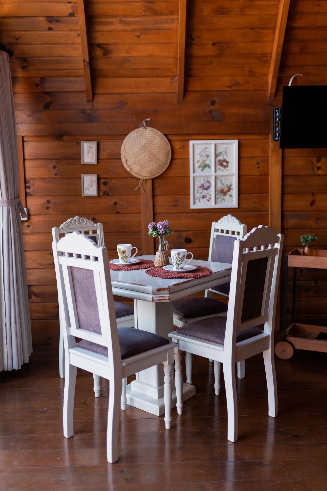
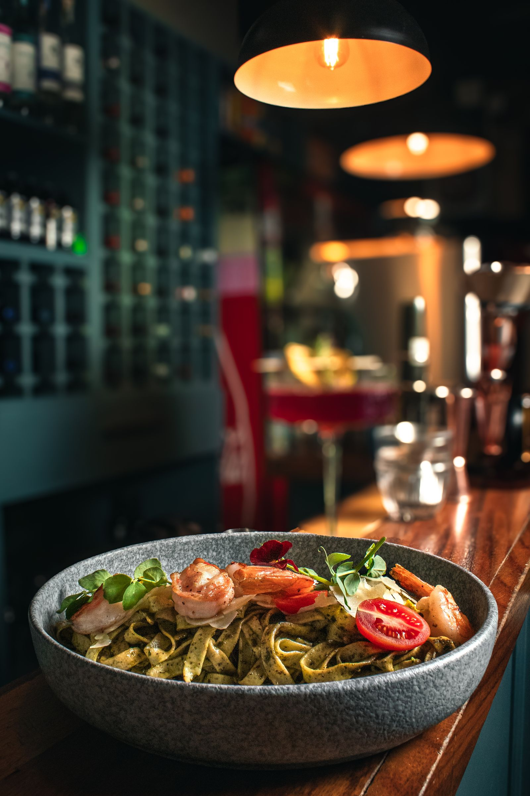
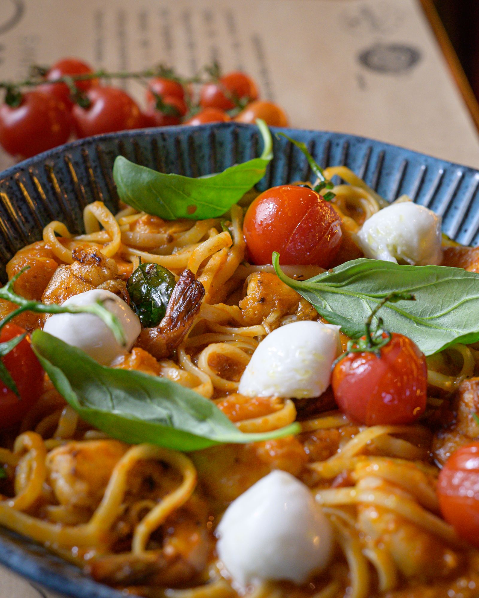
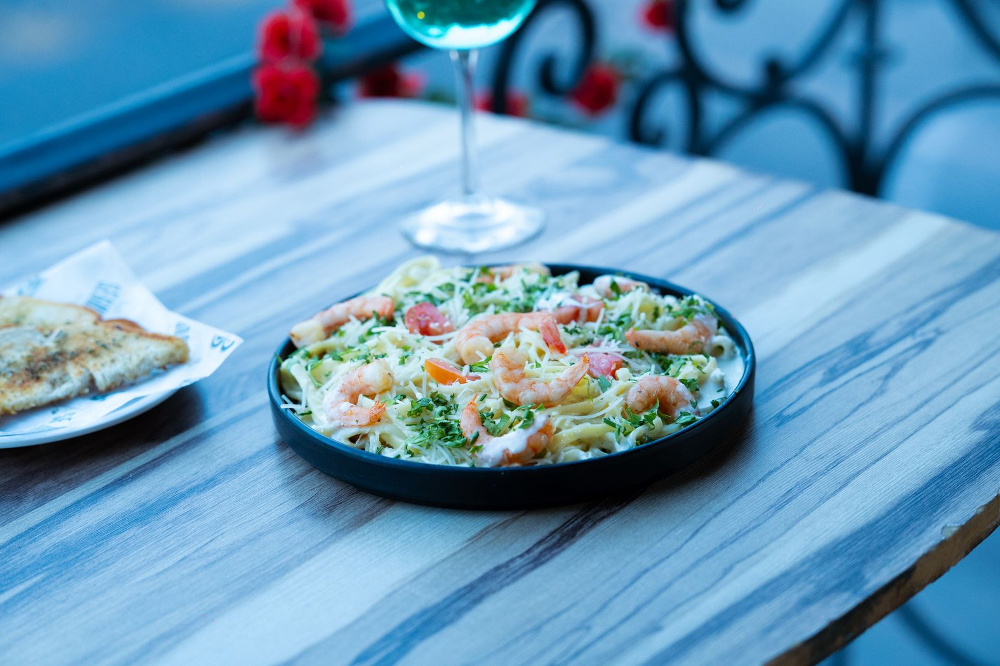
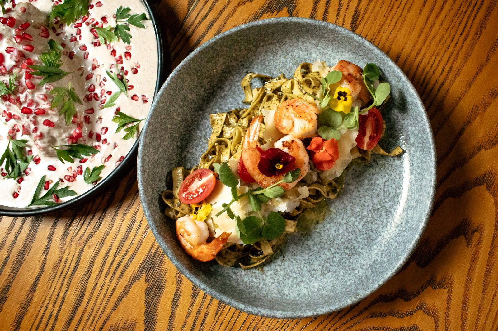
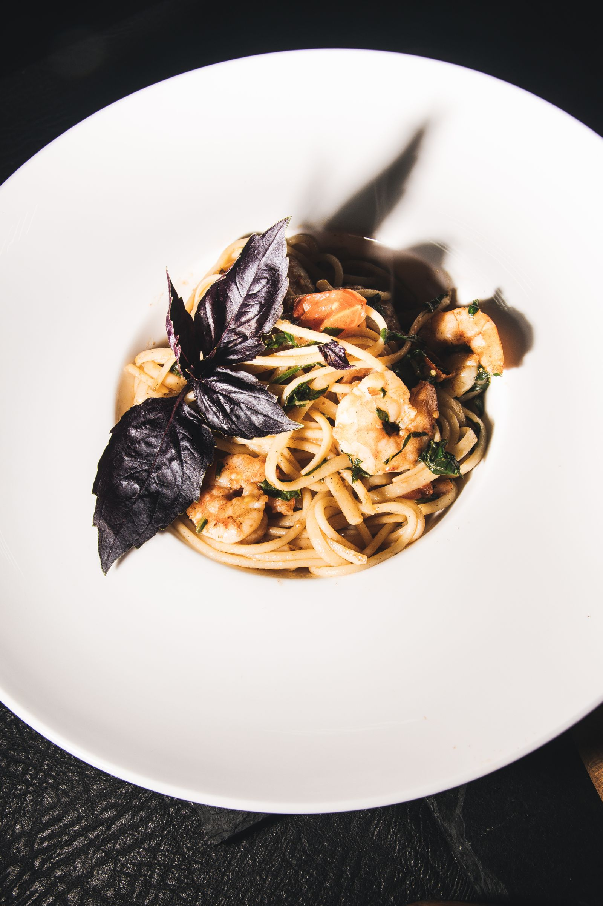
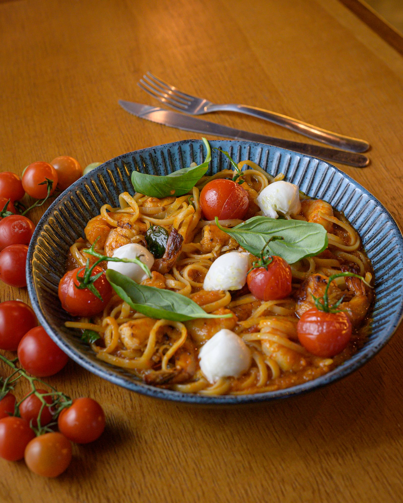
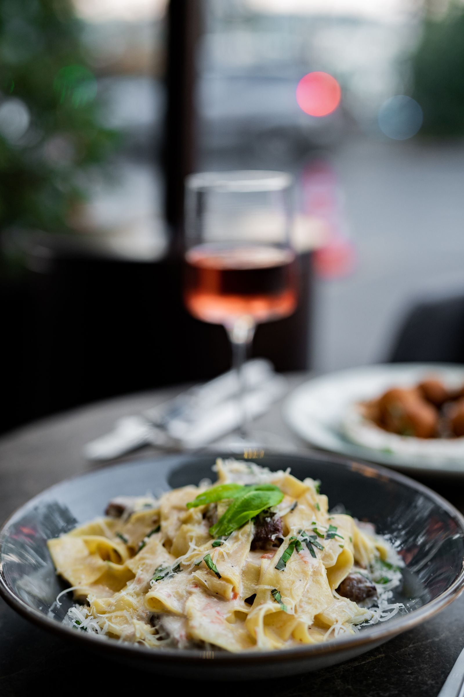
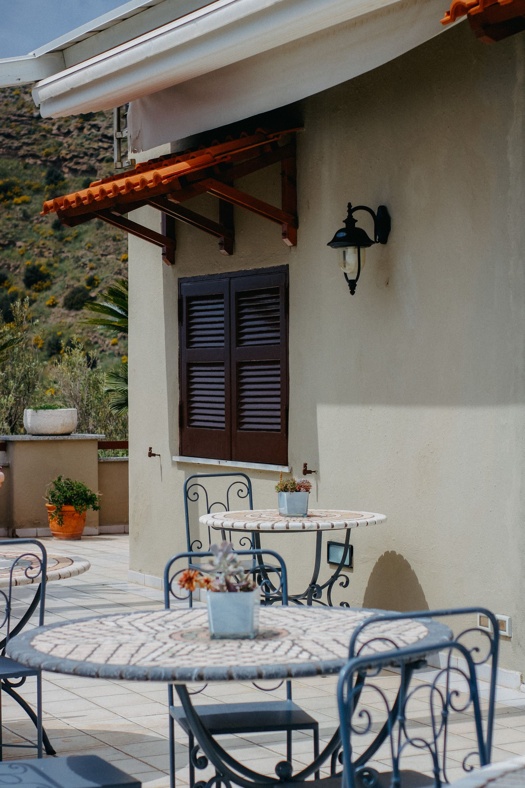

Cucina modenese dal 2019
Sapori di casa, in una tavola curata.
Ingredienti locali, ricette della tradizione emiliana e un servizio attento: da Osteria Bottega ogni piatto racconta una storia.
Ingredienti locali, ricette della tradizione emiliana e un servizio attento: da Osteria Bottega ogni piatto racconta una storia.
Osteria Bottega nasce dal desiderio di portare in tavola i piatti che hanno segnato la nostra infanzia: tortellini fatti a mano, ragù cotto per ore, pane sfornato ogni mattina.
Lavoriamo con produttori locali per garantire ingredienti freschi e di stagione, in un ambiente accogliente pensato per farvi sentire a casa.
Scopri il menuIn produzione: qui verranno inserite le foto reali della sala e dei piatti. Layout già pronto per riceverle.









Foto a scopo dimostrativo (non del locale reale) · verranno sostituite con scatti dell'attività quando disponibili.
Recensioni di esempio, utili a mostrare come appariranno sul sito quando saranno reali.
"Tortellini in brodo da fare invidia alle nonne. Ambiente curato e personale gentilissimo."
— Anna S."Il posto giusto per una cena speciale senza rinunciare alla tradizione emiliana."
— Marco V."Prenotazione facile via WhatsApp, tavolo pronto e ottimo rapporto qualità prezzo."
— Giulia P.| Giorno | Orario |
|---|---|
| Martedì – Domenica | 12:30 – 14:30 / 19:30 – 22:30 |
| Lunedì | Chiuso |